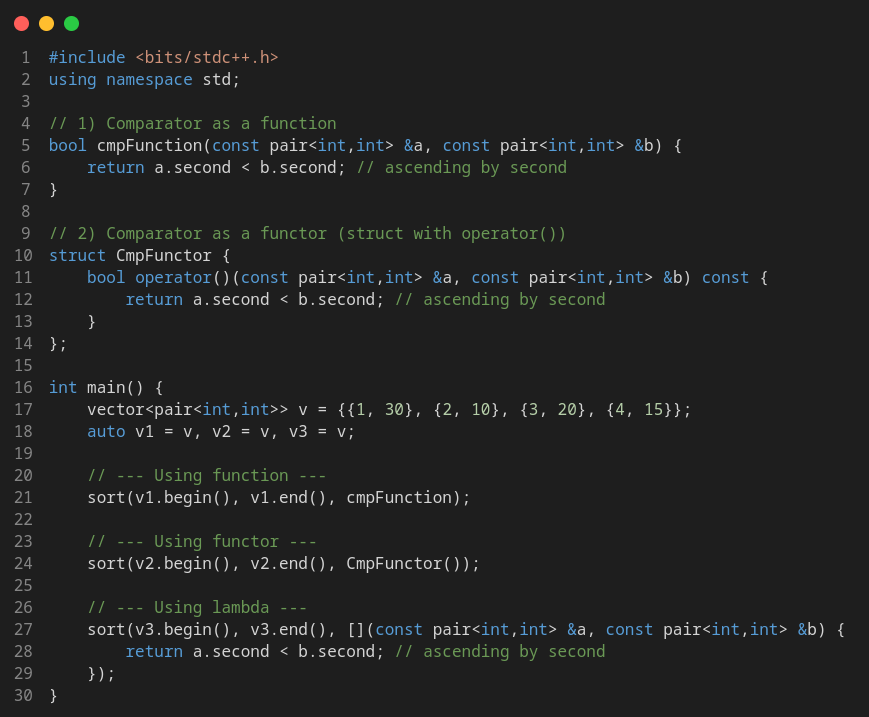
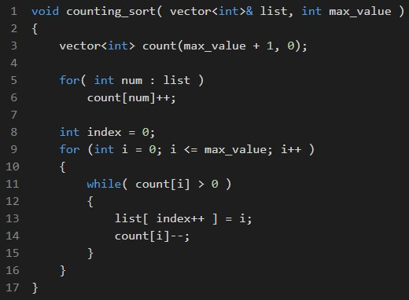
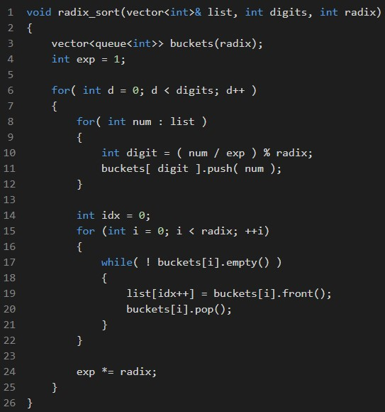

Sorting
Previous lesson: Data Structures & STL
Following lesson: Binary Search
Contents
- The sorting problem
- Built-in sort C++ function
- Custom sorting
- Counting Sort
- Radix Sort
- Problems to practice
The sorting problem
Sorting is the rearrangement of a collection of elements based on a certain criterion, in its organization follows a logic,
and establishes a sequence according to a predefined rule. Usually, we want our collection to be in non-decreasing order,
increasing order, decreasing order, or something like that.
Knowing what to sort is easy, we can sort everything we want to, and essentially, we can sort anything,
but most of the time (even more in competitive programming) we'll be dealing with numbers, lists of numbers. There are also
a lot of situations in which sorting a string is needed, in that cases we use lexicographic order to do so.
How to sort is the funniest part of all the subject, there are a lot of sorting algorithms born at different moments in history,
following are some of them:
- Bubble Sort
- Selection Sort
- Insertion Sort
- Heap Sort
- Quick Sort
- Merge Sort
- Timsort
- Introsort
All of them follow different strategies to do the same, choosing which one should we use depends on some factors such as the kind of elements we're sorting, and the available computing resources. Most of the time in competitive programming we're thinking about the second thing, the compute resources translate as the giving constraints on algorithmic complexity for one particular problem.
So... why to sort?
There are two main reasons why we want to sort a collection of numbers.
The first one is to have information on our list. Having a bunch of numbers and knowing nothing about them, but having to implement
a solution with them sounds abstract, and that forces us to organize the information in such a way we can work with it. Sometimes this
can be done by moving it into other data structures, and other times we can sort it.
Greedy algorithms are very often related to sorting problems because the local decision needs to be optimized based on some
comparison criteria, which is very related to sorting.
The other reason is that sorting facilitates the searching problem. Knowing if an element is in our collection, or where is it
is a basic operation that can be expensive. Usually, the way of optimizing this in a list is with binary search, an efficient
algorithm, but needs the collection to be sorted first.
It can be seen that sorting has a lot in common with some data structures, specifically, with those implemented as a binary tree such
as priority queue, set, or map. This is no coincidence. Set, for example, maintains the collection ordered
at every moment. Yes, the structure that allows you to search when you have some element. If you are thinking of a solution
that requires sorting after every single operation, maybe you need to accomplish the solution with a data structure, such as a
priority queue or a multiset.
Built-in sort C++ function
As almost everything, it already exists a tested and functional function in a language library to do most of the things we want to, and sorting its not the exception.
C++ sort implementation is made on std::sort functions, that is included in algorithm header.
The sintaxis is pretty simple, all you have to do is call the function, and pass it through argument two iterators: the first one should point to the first element who wants to be sorted. The second one must be one position after the last element who wants to be sorted.
If you think about it, you can sort all the collection with its begin() and end() iterator.
If you want to sort an integer vector you can use the following sintaxis:
vector<int> v; sort( v.begin(), v.end() );
Sorting with custom comparators

Counting Sort
There are some special sortings that don't are comparison based on, and they are quicker than every other sorting
algorithm studied until now, that is because they sacrifice extra memory to get faster time limits.
Counting Sort sorts an array of numbers based on their frequency of occurrence, that is, counting the number of times
a certain element (usually, a number) appears on the original shuffled list. Based on that, it is possible to compute how many
elements are before (lower) than that one, how many of that one there is, and how many are after (greater than) it.
The information of the counting is used to place the elements in their final position.
Counting sort can be used when you know the range of values of the elements in the original collection (and when this range is
short enough) because it needs an additional collection of elements of the size of this range.
Let's suppose you have a collection:
[ 1, 7, 2, 3, 2, 5, 6, 1, 7, 9, 8, 9, 0, 1, 6, 6 ]
It can be seen that there are 16 elements (its size), but the elements can be in the interval \( [0,9] \), so the range is 10 ( \(val_{max} - val_{min} + 1 \) ), this is,
there are only 10 possibilities for a random element to be. No matter how many elements the original collection has, every single one
of them only can be one of the numbers 0-9. For this collection counting sort could be a good option.
[ 1, 2, 8, 19, -15, 192, 0, 2, -9015, 26, 12056, -1016, 17, 66 ]
That list is not a good option for using counting sort because the range of values can take the numbers \( [-9015,12056] \).
Another thing to have in mind about counting sort is that works better with large collections of numbers. Large collections for
small ranges are the best. It won't be worth it to use counting sort in the last list because there are just a few numbers (size = 14)
for a very large range (21072). We would need a collection of size 21072 just to sort 14 elements. Not worth it at all.
But let's not discard it yet, because, on the other hand, we have the possibility of sorting \( 10^5 \) elements in \( O(n) \) time
complexity by only an additional collection of 10 numbers. (This, if the example of the first list grows in size)
Doesn't sound so awful anymore, isn't it?
How does counting sort work?
It works in, essentially, three steps:
1st Step
Count the occurrences of every element.
Go through the entire arrangement once, and increase the mapping of the \( a_i \)-th element. Traditionally this can be done in
another array with the size of the range; e.g., on the array
list = [ 1, 7, 2, 3, 2, 5, 6, 1, 7, 9, 8, 9, 0, 1, 6, 6 ]
You can index all the elements on a vector<int>(10,0), but you can also implement it by mapping
directly the keys with a map if you want to, or every other implementation detail you find.
In our example, let be count the array with the size of the range of numbers in the list:
count = [ 1, 3, 2, 1, 0, 1, 3, 2, 1, 2 ]
Working with the index, that means we have 1 number 0's, 3 number 1's, 2 number 2's...
2nd Step
We know that our sorting will have all the 0's first, then all the 1's, then all the 2's, and so on.
There is a pattern, so we can just compute where the first occurrence of every digit is (and all the left digits of the same),
by adding every element in count \( a_i = a_i + a_{i-1} \):
count = [ 1, 4, 6, 7, 7, 8, 11, 13, 14, 16 ]
We can see that count[ count.size()-1 ] = list.size() . This happens every time and makes sense because
we're calculating the accumulation of all elements in ascending order, so the accumulation at the last position has to be the size (number)
of elements we originally had.
3rd Step
Now we can just go through all count at the same time we go through list with a two-pointers method and construct the
sorted array. Doing this can be done on many variants, you can use the accummulated to do queries instead of reconstructing the array because you
may know in which position a certain element is, or use the original count (before accummulated) and reconstruct list
while( count[i] ) list[j++] = i; . It depends a lot on the implementation and the purpose.
list = [ 0, 1, 1, 1, 2, 2, 3, 5, 6, 6, 6, 7, 7, 8, 9, 9 ]
The complexity of counting sort is \[ O(n \, + \, k) \], let \( k \) be the range of the numbers in the original list. This is because we iterate
one time over the original array, and iterate another time (not looped) over the range array (count).
The space complexity of counting sort is \[ O_S( k ) \], because you need an additional collection of the size range: count.

Radix Sort
Radix Sort also uses a particular way to sort that isn't based on comparison, it sorts based on the place value of
the numbers in the list.
Also known as bucket sort because the algorithm works with queues named buckets, as you throw numbers at them.
It's important to know, as well, that the radix is the base of the numeral system we're working with. Decimal is radix 10,
binary system is radix 2, and hexadecimal system is radix 16, for example. The comparison-based sorting algorithms can sort everything,
but Counting and Radix sort can sort only numbers and letters (in lexicographical order). In that case, the radix of the alphabet is 26,
which means there are only 26 letters in the alphabet.
Radix Sort works well on collections with numbers of many digits, not only one or two. (Or with strings)
How does radix sort work?
1st Step
Go through all the elements on the list. Every time add to its correspondant queue the element.
2nd Step
Collect: Extract the items from the queues neatly. Extract them from the original list again.
3rd Step
Repeat all over the same digits times.
The complexity of radix sort is \[ O(nk) \], let \( k \) be the radix of the numbers in the original list. This is because we iterate
radix times over the original array digits times (but digits are a constant), after that the algorithm is done.
The space complexity of counting sort is \[ O_S( n ) \], because you need an additional collection of the same size as the original.
It's using different queues instead of another array, but it's still a collection of the same as the original.

Knowing these algorithms can't be useful when we know there are implemented and well-tested sorting algorithms
everywhere, but knowing how they work can be a powerful tool for the competitive programmer.
The body of knowledge the competitive programmer must have contains a lot of algorithms, topics, and techniques that prepare him for every
challenge he could face in a contest. Having this knowledge and being able to use it wisely for specific solutions can be
the difference between the competitor who achieves to reach the next level, and the one who doesn't.
Problems to practice!
Leetcode 1833 - Maximum Ice Cream Bars
Leetcode 1051 - Height Checker
Leetcode 1122 - Relative Sort Array
Leetcode 912 - Sort an Array

Codeforces GYM 101808F - Random Sort
Leetcode 164 - Maximum Gap
Leetcode 2343 - Query Kth Smallest Trimmed Number